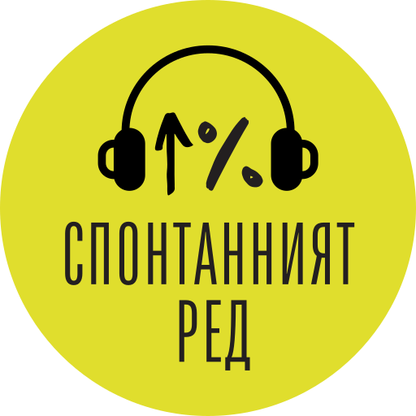

Голямата картина в един епизод
„Спонтанният ред“ е подкаст на Института за пазарна икономика за идеите и събитията, които оформят заобикалящия ни свят. Голямата картина в един епизод.
Експертно. Разбираемо. Всяка седмица.

„Спонтанният ред“ е подкаст на Института за пазарна икономика за идеите и събитията, които оформят заобикалящия ни свят. Голямата картина в един епизод.
Експертно. Разбираемо. Всяка седмица.